인공신장실을 이루는 것들

독일 FMC 5008S 혈액여과투석기
국내 대학병원에서 가장 널리 쓰는 Fresenius 기종. 온라인 HDF(고유량 혈액투석여과)가 가능해 요독 제거율이 높고 투석 중 저혈압을 줄이는 데 도움이 됩니다. 전 병상 동일 기종.
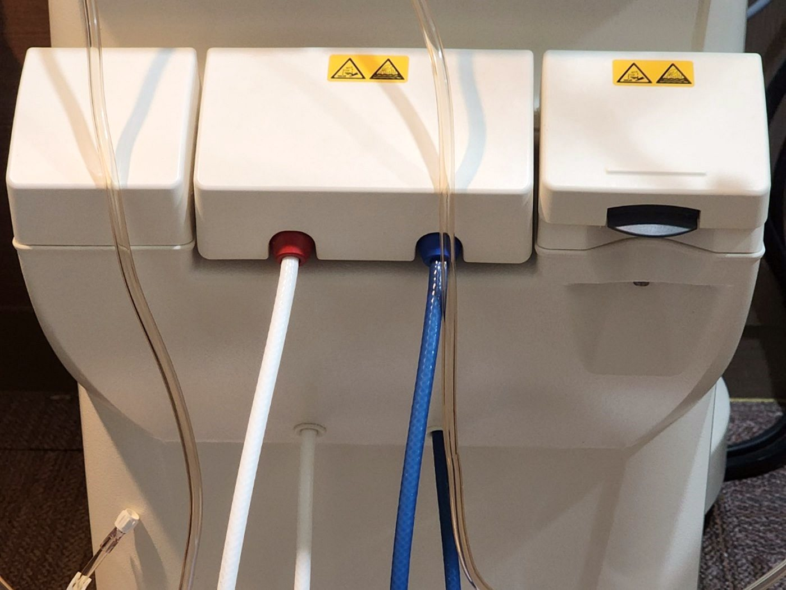
열탕 소독 정수 시스템 · 투석액 라인
투석 1회에 약 120L의 물이 혈액과 투석막을 사이에 두고 만납니다. 화학 소독만 하는 정수기와 달리 매주 열탕 소독을 시행해 투석용수를 관리하고, 투석액 라인은 매 투석마다 세척·소독합니다.
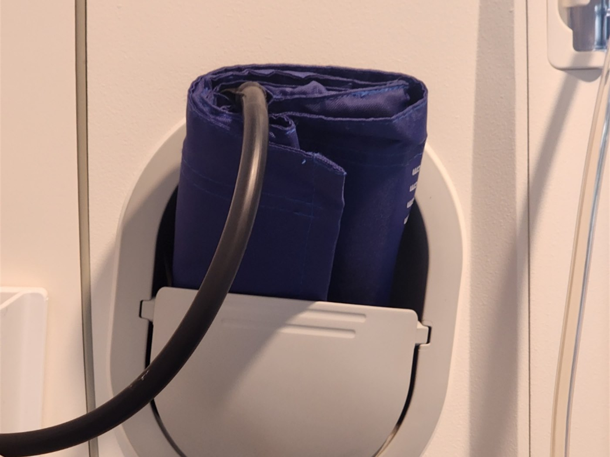
투석 중 혈압 모니터링 · 호출벨
투석기에 혈압 커프가 연결되어 있어 4시간 동안 혈압을 주기적으로 측정합니다. 병상마다 호출벨이 있어 어지럼·근경련 등 이상 증상이 있으면 즉시 의료진을 부를 수 있습니다.
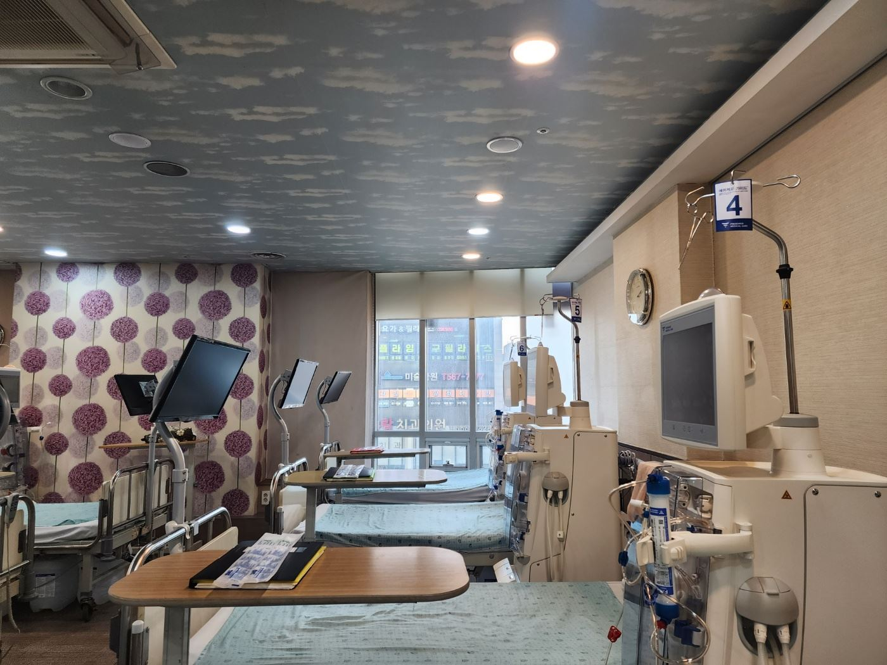
41병상 · 개인 모니터
인공신장실은 총 41병상 규모로, 병상마다 개인 모니터를 두어 4시간의 투석 시간을 편하게 보내실 수 있게 했습니다. 병상 수가 넉넉해 오전·오후·야간 배정이 유연합니다.
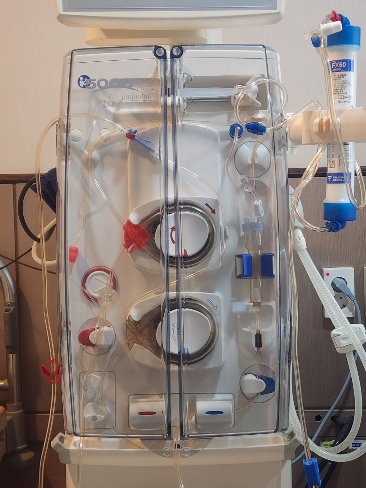
혈액 회로 · 다이알라이저
혈액 회로와 다이알라이저(투석막)는 환자마다 1회용으로 사용합니다. 공기 감지·정맥압 감시 등 안전 장치가 작동해 투석 중 이상을 즉시 알립니다.

창가 병상 · 채광
창가로 병상을 배치해 낮 시간에는 자연광이 들어옵니다. 주 3회, 회당 4시간을 보내는 공간인 만큼 채광과 시야를 고려했습니다.
※ 이 밖에 건체중 측정기(BCM), 1시간 이상 견디는 무정전 전원장치(UPS), 동정맥루 혈류 관리를 돕는 원적외선 치료기를 갖추고 있습니다.
인공신장실 둘러보기
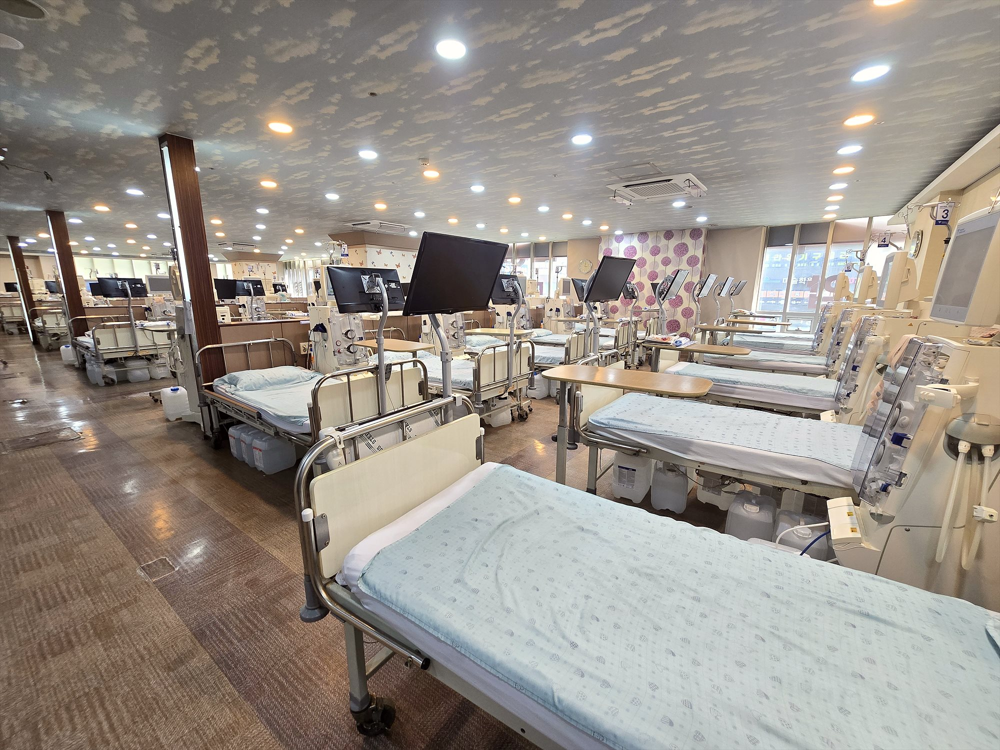
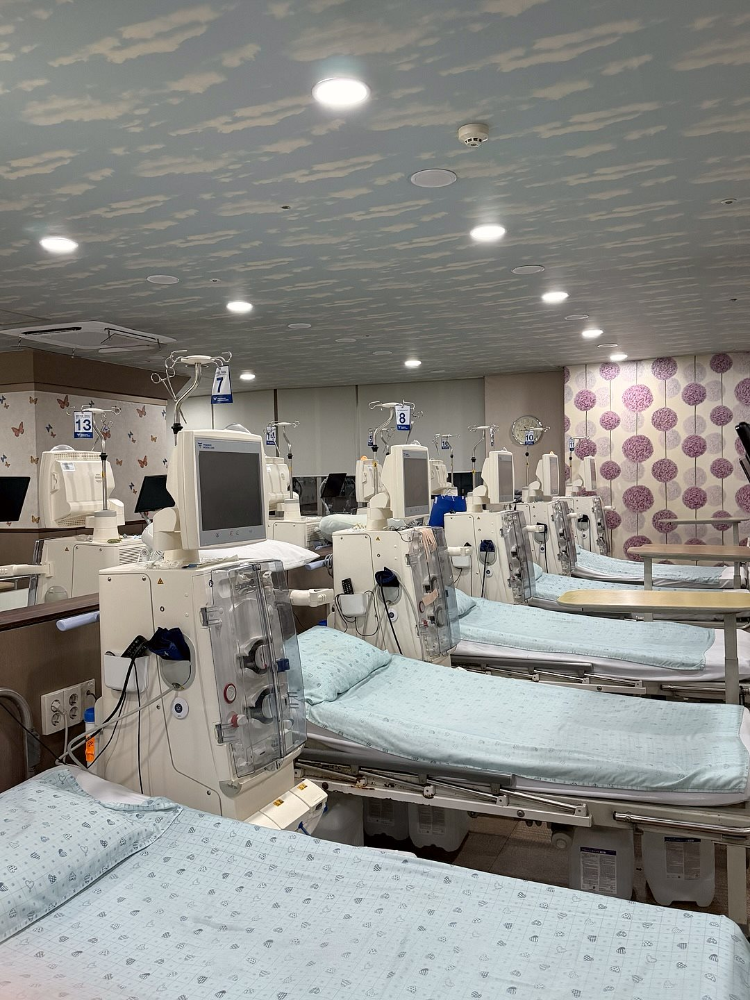
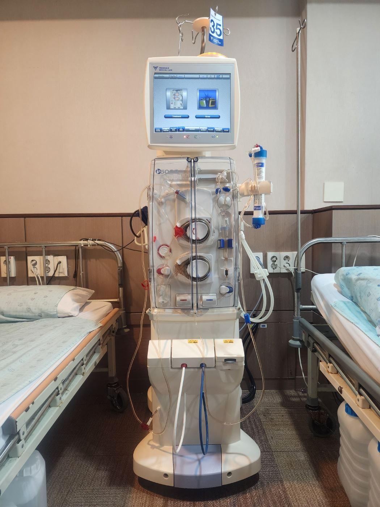
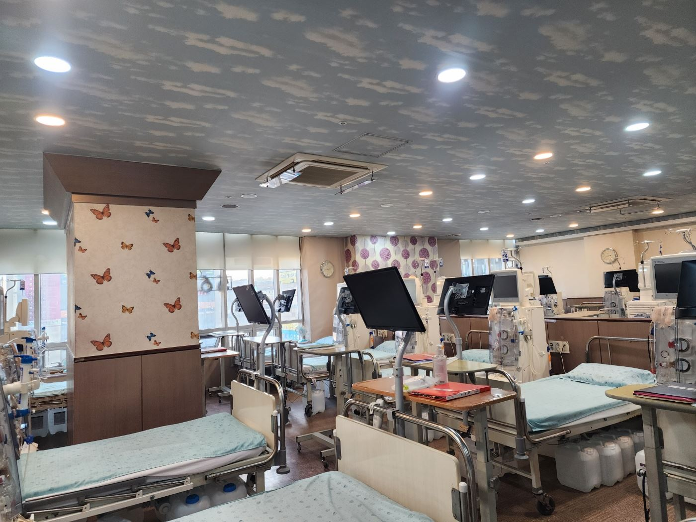
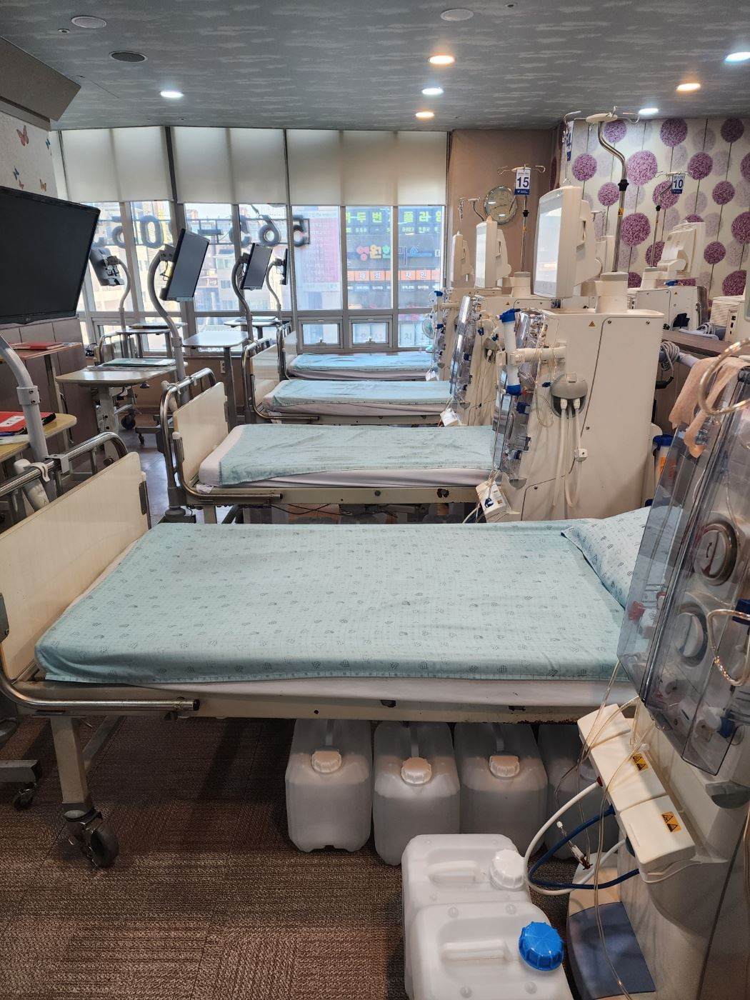
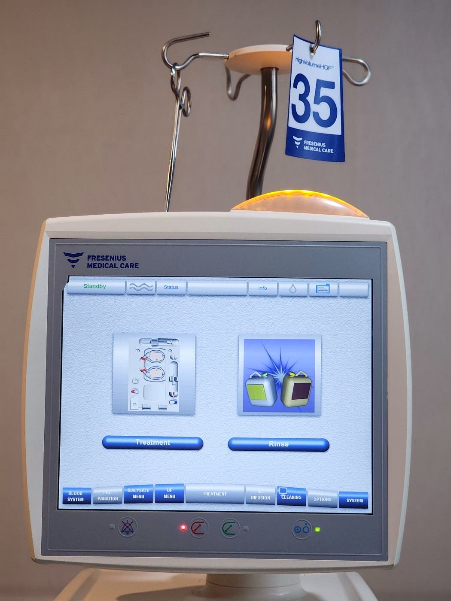

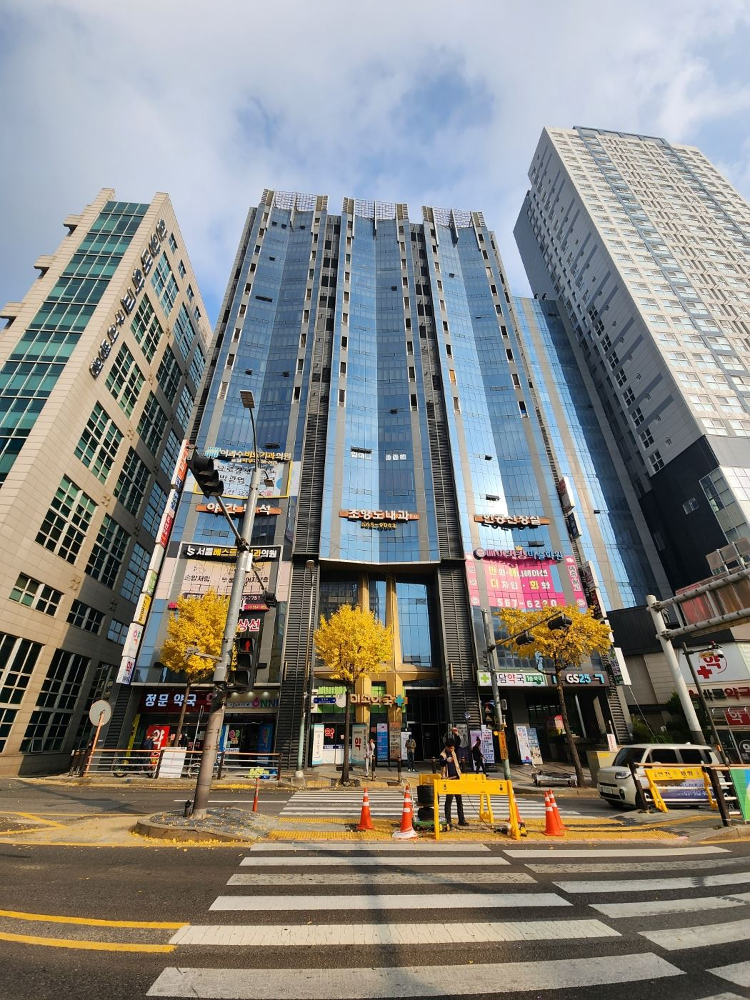